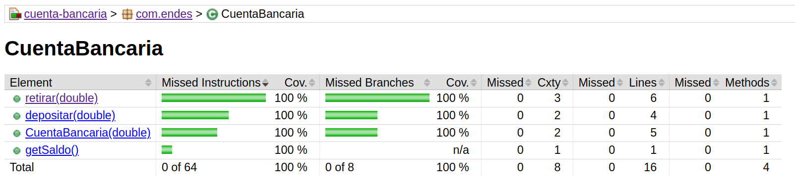

¿Qué es JaCoCo?
JaCoCo (Java Code Coverage Library) es una herramienta para medir la cobertura de pruebas en código Java.
La cobertura de código indica qué porcentaje de las líneas y ramas de tu código han sido ejecutadas durante las pruebas, ayudando a identificar partes que necesitan más pruebas.
Paso 1: Agregar JaCoCo a tu Proyecto
Para usar JaCoCo en un proyecto Maven, añade el siguiente plugin en el archivo pom.xml:
<plugin>
<groupId>org.jacoco</groupId>
<artifactId>jacoco-maven-plugin</artifactId>
<version>0.8.10</version>
<executions>
<execution>
<goals>
<goal>prepare-agent</goal>
</goals>
</execution>
<execution>
<id>report</id>
<phase>verify</phase>
<goals>
<goal>report</goal>
</goals>
</execution>
</executions>
</plugin>
Este plugin genera un informe detallado de cobertura después de ejecutar las pruebas.
Paso 2: Ejecutar las Pruebas y Generar un Informe
Ejecuta el siguiente comando para correr las pruebas y generar el informe de cobertura:
mvn clean verifyEl informe de cobertura se generará en la carpeta target/site/jacoco/.
Paso 3: Interpretar el Informe
Abre el archivo index.html en un navegador. Verás:
- Líneas cubiertas: Porcentaje de líneas ejecutadas durante las pruebas.
- Métodos cubiertos: Métodos ejecutados al menos una vez.
- Cobertura de ramas: Ramas ejecutadas en estructuras de control.
Esto ayuda a identificar partes del código que necesitan pruebas adicionales.
Resumen de Pasos
| Paso | Descripción |
|---|---|
| 1 | Agregar el plugin de JaCoCo al archivo pom.xml. |
| 2 | Ejecutar pruebas con mvn clean verify. |
| 3 | Abrir el informe generado en target/site/jacoco/index.html y analizar los resultados. |